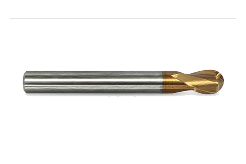

← Küre Frezeler
Standart Küre — Kısa Boy
Üreticiden standart küre — kısa boy — stoktan aynı gün kargo, aynı üründen 10+ adette dip fiyat.
KaplamaTSH — 55 HRC sınıfı
Kullanım alanı55 HRC sertliğe kadar
Çap toleransı (D1)0 / −0,02 mm
Şaft toleransı (D2)h6
Radius toleransı±0,01 mm
KarbürMikro tane (ultra-fine)
MenşeiTürkiye — kendi üretimimiz
🚚 Aynı gün kargo
💵 Kapıda ödeme
↩ 14 gün iade
| ⌀ Çap | Boy | R | 10+ Adet | 5-9 Adet | 1-4 Adet | Sipariş |
|---|---|---|---|---|---|---|
| 1,0 | — | — | 18,67 $ | 19,73 $ | 21,22 $ | |
| 1,0 | 4 | — | 28,00 $ | 29,59 $ | 31,82 $ | |
| 1,0 | 4 | R0,2 | 28,00 $ | 29,59 $ | 31,82 $ | |
| 1,0 | 6 | — | 28,00 $ | 29,59 $ | 31,82 $ | |
| 1,0 | 6 | R0,2 | 28,00 $ | 29,59 $ | 31,82 $ | |
| 1,0 | 8 | — | 28,00 $ | 29,59 $ | 31,82 $ | |
| 1,0 | 8 | R0,2 | 28,00 $ | 29,59 $ | 31,82 $ | |
| 1,5 | — | — | 18,67 $ | 19,73 $ | 21,22 $ | |
| 1,5 | 4 | — | 28,00 $ | 29,59 $ | 31,82 $ | |
| 1,5 | 4 | R0,2 | 28,00 $ | 29,59 $ | 31,82 $ | |
| 1,5 | 6 | — | 28,00 $ | 29,59 $ | 31,82 $ | |
| 1,5 | 6 | R0,2 | 28,00 $ | 29,59 $ | 31,82 $ | |
| 1,5 | 8 | — | 28,00 $ | 29,59 $ | 31,82 $ | |
| 1,5 | 8 | R0,2 | 28,00 $ | 29,59 $ | 31,82 $ | |
| 1,5 | 10 | — | 28,00 $ | 29,59 $ | 31,82 $ | |
| 1,5 | 10 | R0,2 | 28,00 $ | 29,59 $ | 31,82 $ | |
| 2,0 | — | — | 18,67 $ | 19,73 $ | 21,22 $ | |
| 2,0 | 4 | — | 28,00 $ | 29,59 $ | 31,82 $ | |
| 2,0 | 4 | R0,2 | 28,00 $ | 29,59 $ | 31,82 $ | |
| 2,0 | 4 | R0,5 | 28,00 $ | 29,59 $ | 31,82 $ | |
| 2,0 | 6 | — | 28,00 $ | 29,59 $ | 31,82 $ | |
| 2,0 | 6 | R0,2 | 28,00 $ | 29,59 $ | 31,82 $ | |
| 2,0 | 6 | R0,5 | 28,00 $ | 29,59 $ | 31,82 $ | |
| 2,0 | 8 | — | 28,00 $ | 29,59 $ | 31,82 $ | |
| 2,0 | 8 | R0,2 | 28,00 $ | 29,59 $ | 31,82 $ | |
| 2,0 | 8 | R0,5 | 28,00 $ | 29,59 $ | 31,82 $ | |
| 2,0 | 10 | — | 28,00 $ | 29,59 $ | 31,82 $ | |
| 2,0 | 10 | R0,2 | 28,00 $ | 29,59 $ | 31,82 $ | |
| 2,0 | 10 | R0,5 | 28,00 $ | 29,59 $ | 31,82 $ | |
| 2,0 | 12 | — | 28,00 $ | 29,59 $ | 31,82 $ | |
| 2,0 | 12 | R0,2 | 28,00 $ | 29,59 $ | 31,82 $ | |
| 2,0 | 12 | R0,5 | 28,00 $ | 29,59 $ | 31,82 $ | |
| 2,5 | — | — | 18,67 $ | 19,73 $ | 21,22 $ | |
| 3,0 | — | — | 18,67 $ | 19,73 $ | 21,22 $ | |
| 3 | — | — | 16,80 $ | 17,75 $ | 19,09 $ | |
| 3 | — | R0,5 | 16,80 $ | 17,75 $ | 19,09 $ | |
| 3,0 | 6 | — | 37,33 $ | 39,45 $ | 42,42 $ | |
| 3,0 | 8 | R0,5 | 39,20 $ | 41,43 $ | 44,55 $ | |
| 3 | 50 | — | 10,96 $ | 11,58 $ | 12,45 $ | |
| 4,0 | — | — | 18,67 $ | 19,73 $ | 21,22 $ | |
| 4 | — | — | 26,13 $ | 27,61 $ | 29,69 $ | |
| 4 | — | R0,5 | 26,13 $ | 27,61 $ | 29,69 $ | |
| 4 | 50 | — | 11,77 $ | 12,44 $ | 13,38 $ | |
| 5 | 50 | — | 13,44 $ | 14,20 $ | 15,27 $ | |
| 6,0 | — | — | 36,71 $ | 38,80 $ | 41,72 $ | |
| 6 | 55 | — | 14,83 $ | 15,67 $ | 16,85 $ | |
| 8,0 | — | — | 76,53 $ | 80,88 $ | 86,97 $ | |
| 8 | 60 | — | 19,47 $ | 20,58 $ | 22,12 $ | |
| 8 | 64 | — | 24,69 $ | 26,09 $ | 28,06 $ | |
| 10 | 70 | — | 28,25 $ | 29,86 $ | 32,10 $ | |
| 10 | 73 | — | 34,79 $ | 36,77 $ | 39,53 $ | |
| 12 | 75 | — | 39,37 $ | 41,61 $ | 44,74 $ | |
| 12 | 83 | — | 50,76 $ | 53,64 $ | 57,68 $ | |
| 220 | — | — | 24,36 $ | 25,74 $ | 27,68 $ |